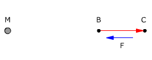
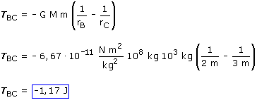

El trabajo sale negativo porque la fuerza se opone al desplazamiento.
La masa m no irá sola desde A hasta B, habrá que llevarla
(Y nos costará un trabajo de 3.34 J) o lanzarla con una enegía
cinética miníma de 3.34 J


El trabajo sale negativo porque la fuerza se opone al desplazamiento.
La masa m no irá sola desde A hasta B, habrá
que llevarla (Y nos costará un trabajo de 3,34 J) o
lanzarla con una enegía cinética miníma
de 3,34 J
El trabajo sale negativo porque la fuerza se opone al desplazamiento.
La masa m no irá sola desde B hasta C, habrá
que llevarla (Y nos costará un trabajo de 1,17 J) o
lanzarla con una enegía cinética miníma
de 3,34 J
El trabajo sale positivo porque la fuerza está a favor
del desplazamiento
La masa m irá sola desde C hasta A, ganando 4.51 J
de energía cinética